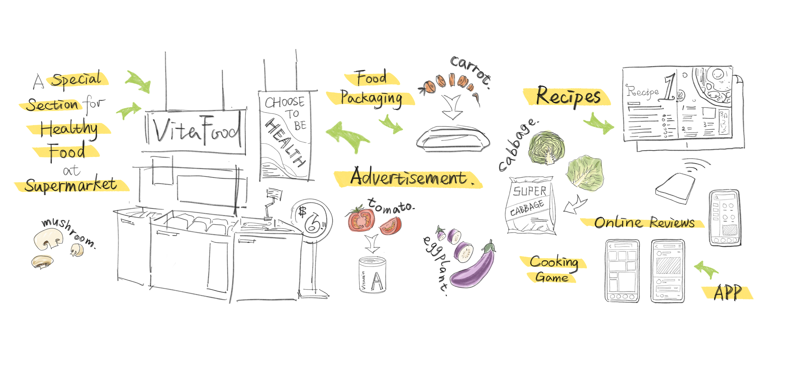
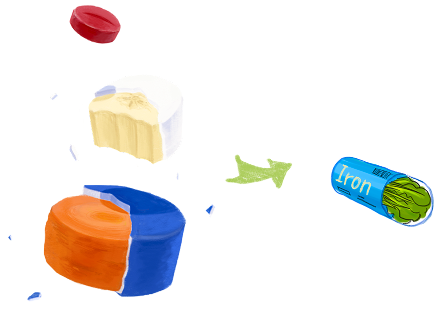
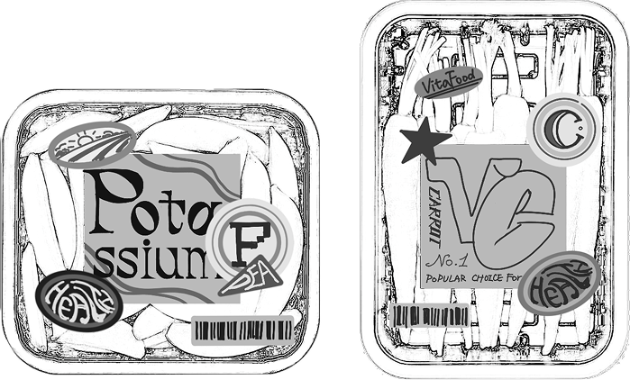
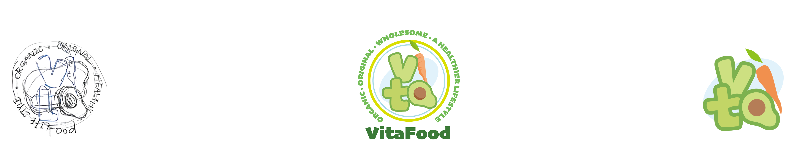
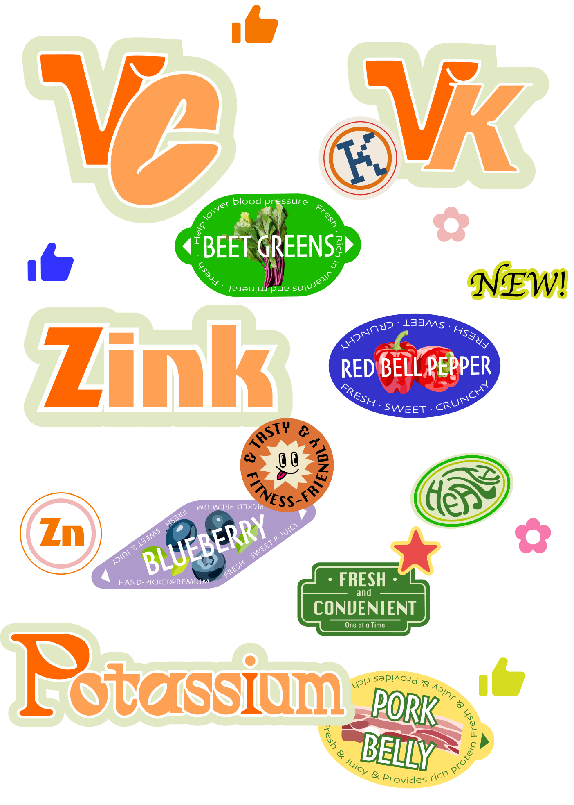
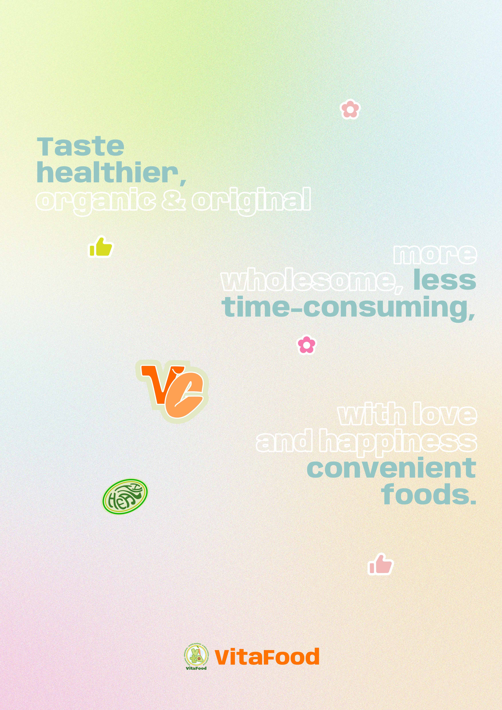
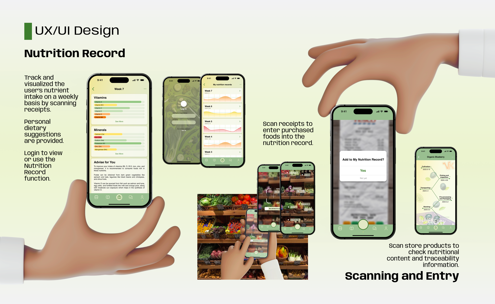
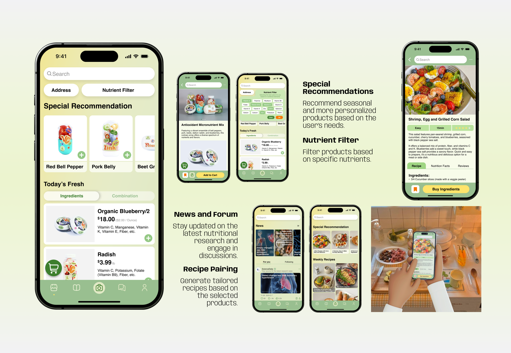
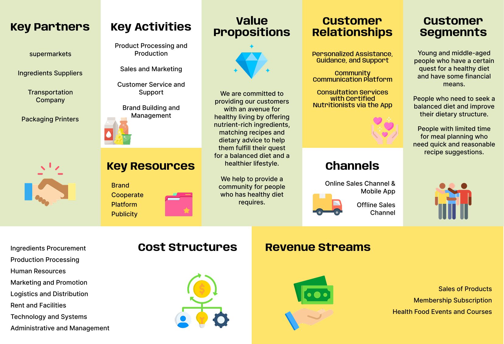

2024.12
VitaFood is a healthy-dietary advice system designed to raise awareness of
micronutrient deficiencies and guide people toward balanced eating. It
brings together an app, food packaging, and an in-supermarket experience,
turning an invisible health issue into something customers notice at the
shelf.
The project addresses hidden hunger — a
deficiency of the 26 micronutrients essential for healthy body function.
According to the World Health Organization, hidden hunger affects more than
two billion people worldwide, yet most people have never heard the term and
no effective, mainstream solution exists for everyday shoppers.
VitaFood closes that gap by combining three touchpoints: eye-catching
packaging that introduces the problem at the point of purchase, an app that
tracks intake and recommends nutrient-rich products, and a dedicated
supermarket section that ties the two together.

The core visual idea takes the capsule shape of a vitamin supplement and flips it back to its source — fresh food. Each capsule-shaped package holds produce rich in a specific micronutrient, labeled with the nutrient's chemical symbol (VC, VK, Potassium, Zinc…) so that shoppers can quickly spot what they need. The result is a playful, poster-like shelf presence that turns nutrition information into something tactile and intuitive.



The brand combines the VitaFood name with food-derived marks to create a lively, vibrant identity. Green and white anchor the palette, with sky blue and orange accents that convey simplicity and health. Sticker-style labels, posters, and in-store signage carry the same language across every touchpoint, giving the brand a cohesive presence from shelf to screen.




The companion app turns shopping into a guided, trackable experience. Customers discover a product on the shelf, scan it to learn about its nutritional value, record receipts to track weekly intake, and receive tailored recipe and product suggestions — closing the loop between awareness, purchase, and habit.

Scanning and Nutrition Record. Users scan shelf products to check nutritional content and traceability, then scan receipts to automatically log purchases into their Nutrition Record. The record visualizes weekly intake of vitamins and minerals and offers personalized dietary suggestions.

Recommendations and Recipes. The app suggests seasonal, personalized products based on each user's needs, with filters by specific nutrients. Users can also browse pairing-based recipes and weekly meal inspiration.
News and Forum. A built-in feed keeps users updated on nutritional research and lets them share experiences with a community of other health-conscious shoppers.
VitaFood is built to sit inside a real retail ecosystem. The business model centers on partnerships with supermarkets, ingredient suppliers, and packaging printers, with revenue coming from product sales, membership subscriptions, and health-food events. Marketing focuses on dedicated organic-section placements, social-media campaigns, and co-branded launches with health, sports, and fitness labels.


A storyboard walks through the everyday scenario: a customer spots VitaFood packaging in the supermarket's organic section, opens the app to check the recipe pairing, scans the receipt at checkout, and later returns home to cook a meal that fits her nutritional goals — then shares it back to the forum.
Hidden hunger is not a problem people can see in the mirror — but it is one
they can meet at the shelf. VitaFood reframes nutrition as something
approachable, branded, and easy to act on, helping people build healthier
habits one shopping trip at a time.
Medium: mobile app, packaging design, branding, in-store signage
Keywords: UIUX, branding, packaging design, health, nutrition, retail
experience